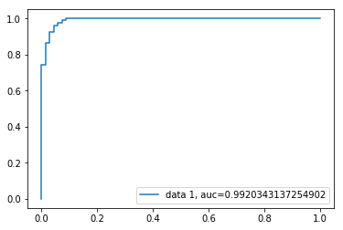

AUC Curve on Binary Classification
from sklearn import svm, datasets
from sklearn import metrics
from sklearn.linear_model import LogisticRegression
from sklearn.model_selection import train_test_split
from sklearn.datasets import load_breast_cancer
import matplotlib.pyplot as plt# Load Breast Cancer Dataset
breast_cancer = load_breast_cancer()X = breast_cancer.data
y = breast_cancer.target# Split the Dataset
X_train, X_test, y_train, y_test = train_test_split(X, y, test_size=0.33, random_state=44)# Model
clf = LogisticRegression(penalty='l2', C=0.1)
clf.fit(X_train, y_train)
y_pred = clf.predict(X_test)/Users/rajacsp/anaconda3/envs/py36/lib/python3.6/site-packages/sklearn/linear_model/logistic.py:433: FutureWarning: Default solver will be changed to 'lbfgs' in 0.22. Specify a solver to silence this warning.
FutureWarning)
# Accuracy
print("Accuracy", metrics.accuracy_score(y_test, y_pred))Accuracy 0.9521276595744681
# AUC Curve
y_pred_proba = clf.predict_proba(X_test)[::,1]
fpr, tpr, _ = metrics.roc_curve(y_test, y_pred_proba)
auc = metrics.roc_auc_score(y_test, y_pred_proba)
plt.plot(fpr,tpr,label="data 1, auc="+str(auc))
plt.legend(loc=4)
plt.show()